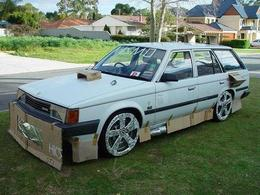

Montehermoso
 De: La Frikipedia, la enciclopedia extremadamente seria.
De: La Frikipedia, la enciclopedia extremadamente seria.
| De la serie pueblos del mundo:
|
Montelmosu
مونتيهيرموسو
ሞንቴርሞሶ
Μοντελμόσου
|
|
|

|
| (Bandera)
|
(Escudo de armas)
|
|
| Topónimo oficial
|
Mu noble y mu leal villa acerera de Montehermoso
|
| País
|
Aspaña
|
| Código postal
|
No les envíen cartas. Es mejor repartirlas por las aceras gigantes, que sirven como redes magnéticas de comunicación.
|
| Superficie
|
Nadie sabe dónde acaba pueblo y empieza la dehesa, es raro que no los separe ninguna acera gigante.
|
| Altitud
|
Baja. Lo de monte es coña.
|
| Distancia
|
Con lo que se tarda en encontrarlo por la autovía, está a años luz de cualquier sitio.
|
| Fundación
|
Cuando se construyó la primera acera gigante junto a los dólmenes.
|
| Población
|
Proporcional a la anchura de las aceras.
|
| Gentilicio
|
Montelmoseñus
|
| Alcalde
|
El que ganó las elecciones
|
| Este pueblo es el paraíso de constructores de aceras gigantes de la zona, que no se asusten los turistas, estáis avisados.
|
Montehermoso (del 2010, por tener la acera más grande de Extremadura, construida junto a los bares de la entrada del pueblo y que obstruye el acceso a la localidad.
Localización del pueblo
Montehermoso no es localizable desde la red de autovías. Si se va al pueblo desde la autovía de la plata, la salida a Montehermoso está señalizada como "salida a Carcaboso y Pozuelo de Zarzón".provincia de Badajoz habiéndose vuelto previamente locos buscando desesperadamente la salida a Montehermoso.
Historia
A lo largo de los 700 años de historia del pueblo apenas han ocurrido cosas relevantes. Buscando en Internet, lo más destacable que encontramos fueron las "defenestraciones de Montehermoso", acontecimiento ocurrido en 1931 en el cual unos paletos embrutecidos intentaron tirar por la ventana del ayuntamiento al alcalde y al secretario.
[2]Nota: la foto donde tiran gente por la ventana no es de Montehermoso.
El pueblo fue fundado allá por el año mil doscientos y pico, por campesinos asturianos y leoneses que vinieron a repoblar unas tierras recién mangadas a los moros que unos siglos antes los moros se las habían mangado a sus abuelos. Varios de estos campesinos cogieron un día unas cuantas botellas de vino y se fueron a hacer botellón al sur de la localidad. A alguien que ya estaría trompa se le ocurrió decir que en ese valle había fuentes de vino, y le pusieron a la zona el nombre de Valdefuentes. En ese momento, uno que pasaba por allí se encontró la imagen de una virgen escondida en el tronco de una encina caída. La coincidencia de esos dos hechos en el tiempo hizo que a esa virgen se le pusiera el nombre de virgen de Valdefuentes, y que todos los años por esas fechas se le celebrase una romería en su honor (donde la gente, más que a rezar a la virgen, va a emborracharse).
Fenómenos paranormales
Montehermoso es un lugar donde, pese a que nunca ocurren fenómenos inexplicables muy fuera de lo normal, existe un considerable número de flipados importantes investigadores, conocidos a nivel local como los "parasicólogos", que intentan salir en programas tipo Cuarto Milenio aprovechando cualquier parida investigar seriamente sucesos misteriosos que ocurran como "la chica de la recta".
Se desconoce con exactitud cuándo esta gente empezó a investigar, pero el caso es que se hicieron famosos gracias al embalse de Valdeobispo. En este embalse un grupo de personas se reunió una noche para emborracharse hacer una serie de experimentos de luces. Da la casualidad (y ya es casualidad, porque a ese embalse no iba nunca nadie, y menos de noche) que en la otra punta de la laguna se encontraban otras personas que vieron las luces y se pensaron que eran unos OVNIs. Los parasicólogos locales, en cuanto se enteraron de que había OVNIs en el pueblo, difundieron la noticia y casi consiguen llevar al pueblo a la televisión. Por supuesto, los causantes de las luces aún se siguen descojonando y se están planteando "seriamente" hacer aparecer a la virgen en el pueblo a ver que pasa.
Otro momento conocido de estos investigadores fue cuando a un camión que transportaba pintura roja se le hizo accidentalmente un agujero en la carretera de Pozuelo, a la altura de la laguna. Nada más vieron la mancha se pensaron que se trataba de sangre que algún espíritu estaba haciendo aparecer allí, y entonces si que consiguieron llevar al pueblo a los medios de comunicación. Todavía no ha limpiado nadie la pintura roja, de manera que la gente se sigue flipando (y el camionero, por supuesto, descojonándose).
Lugares de referencia si consigues entrar en este pueblo
- La calle chapuacera: se llama así al conjunto de bares situados a la entrada del pueblo junto a la gasolinera. Junto a ellos se construyó en 2010 una acera de grandes dimensiones, de la que más adelante hablaremos. El más concurrido de ellos es el Lumar, donde se juntan algunos de los mejores jugadores de dominó y cartas del país, algunos de ellos con poderes psíquicos (según los parasicólogos anteriormente mencionados) que les hacen ganar todas las partidas. Además del Lumar, hay otros bares menos relevantes como el Truk, el Extremadura, el
Betis Sevilla, el Garyto y la Futura.
- El Botellódromo: que no es otra cosa que la carretera de entrada al pueblo según se viene de Plasencia. Fue designado ese sitio por obra y gracia del ayuntamiento, que dijo: "La juventud tiene hasta los huevos a los habitantes de la plaza Morón (no confundir con "moron" sin acento, que en inglés significa algo muy diferente), y a los que limpian por las mañanas los restos del fiestorro, así que vamos a mandarlos en frente de Garrido y que se apañen como puedan". Otra hipótesis reciente sobre el origen del botellódromo es que se lo llevaron de la plaza Morón ante la presión de algunos
antros bares del pueblo, a quienes el botellón les hacía una fuerte competencia al no beberse allí garrafón y ser las bebidas 50 veces más baratas. Junto al botellódromo se encontraba hasta hace poco el "Stop más efectivo del mundo", un Stop donde tenías que parar sí o sí, o te pegabas un tortazo contra un poste que había justo antes de llegar a él.[3]
- La Puerta del Parque: es el lugar de queda de la mayoría de la gente del pueblo, y cuando digo mayoría me refiero a niños, adolescentes, maduritos y viejos. Por la noche se convierte en meadero municipal, ya que los servicios de las discotecas están petaos y huelen a porro. Se advierte al que quiera mear en las calles del pueblo que hay que tener mucho cuidado, ya que la policía local pone multas a la gente que ven meando (y en 2009, encima, difundieron esto en el libro de las fiestas de San Bartolomé para advertir a la gente de que está terminantemente prohibido mear), mientras que muchas veces no les dicen nada a los coches mal aparcados. En la puerta del parque se hallan unas misteriosas zapatillas colgadas cuyo origen se desconoce, lo cual ha dado lugar a un fuerte debate entre los parasicólogos locales, quienes en varias ocasiones han estado a punto de enviar el tema a Cuarto Milenio.
- La Biblioteca: Lugar en el que se reúne la gente del pueblo para
robar intercambiar cosas por el emule wifi, se instalaron sofás en el vestíbulo para que no tuvieran que subir y ver las estanterías llenas de libros (nuevos), dice la leyenda que hay una persona en el pueblo que lee, pero ni siquiera los de Cuarto Milenio pudieron resolver este enigma.
- El Parque Temático: Lugar concurrido y necesario del pueblo que se abre una vez cada 5 años para que la gente se pueda reír de las chorriminiaturas de los monumentos de la región, se está estudiando abrirlo y cobrar entrada a los
pardillos visitantes del pueblo.
- Espacio para la Creación Joven:
Centro friki Lugar desierto donde los jóvenes se reúnen a realizar actividades lúdicas de forma gratuita (por ahora), se dice que la última persona que entró fue un señor de Sagunto. Ahora está conquistado por varios grupos de jevi/punk/country Noruego que se dedican al mínimo uso debido de las instalaciones porque aprovechan la sala de ensayos para ensayar y autopirateargrabar las cosillas que hacen. No se sabe quienes son los individuos exactos, solo se ven crestas, pinchos y pelos largos, pero son los que hacen frente a la garrulería que impera en esa tierra valdía.
Monumentos Importantes

Sistema de alta tecnología que algunos autobuseros querían usar para esquivar la chapuacera. Nunca se llegó a aplicar porque el pueblo no tiene grúas.
- La chapuacera, superacera o acera gigante de la calle de los bares es el mayor símbolo de Montehermoso y uno de los monumentos más importantes de 2010 (se cree que por la presión de los bares, que querían tener sus buenas terrazas, aunque esto nunca ha sido demostrado) una acera que, unida a la acera de enfrente, tiene 12 metros de ancho por 20 de largo. Esta acera, como es lógico, suele estar vacía, porque por ahí no pasa tanta gente como para que se usen los 12 metros. Sin embargo, como es la entrada principal para los coches y sólo han dejado dos carriles, cada vez que aparca un camión a descargar en los bares existe el riesgo de que se forme un atasco monumental que llegue hasta Coria y Plasencia.
- Las mil setecientas cuarenta y nueve granjas de pollos que alberga este maravilloso pueblo, a las cuales estaremos eternamente agradecidos por los aromas que desprenden, y que bañan al pueblo de olor a rosas. La sección de jardinería del programa Bricomanía se está planteando seriamente que el "coleta" venga a Montehermoso a coger de los montones de estiércol el sustrato para sus plantas, y el compost de pollo.
- Castillo: en el pueblo hay un barrio que se llama el castillo, cerca de la plaza de España. Aunque no existe constancia alguna de que en el pueblo haya habido alguna vez un castillo, el nombre del barrio ha dado origen a todo tipo de debates, además de leyendas casi surrealistas. Lo más destacable del barrio es, sin duda, la Plazuela-Laberinto de Sebastián Martín, una plazuela donde hay varios rincones sin salida que parecen calles, con lo cual el que llega allí por primera vez no sabe por dónde se sale.
- Edificios religiosos: la Iglesia, el puñao de ermitas que hay diseminadas por todo el pueblo, la casa del cura, y las cruces de piedra (dos de las cuales están en paradero desconocido).
- Edificios emblemáticos: la casa del guarda, allá en la dehesa boyal (se han empeñao en llamarla así, aunque nadie en el pueblo sabe qué significa "boyal"). También está el cine Osuna, la fuente del Bote, la del Ronco, la Piedra Resbalera, la Piedra del Hoyo (ya casi en desuso), la plaza de toros (de la que sobran unas 3.000 localidades salvo cuando algo es gratis que se llena), un minitorio (auditorio de reducidas dimensiones, aunque pa la gente que va...) y otros que no me acuerdo.
- Calleja de la ferretería (oficialmente, "calle de Sorolla"): situada en pleno centro comercial del casco urbano, esta calle conserva el mismo asfalto que tenía en el siglo XVII, es decir, no tiene asfalto ninguno. Esto ha hecho de esta calle un importante monumento dentro de la localidad, ya que refleja cómo eran todas las calles del pueblo allá por el siglo XIX: además del "asfalto", la calle cuenta con argollas para atar a los burros (nadie sabe pa qué, por que en el pueblo ya no hay burros), un corral con vacas y, hasta hace poco, estaban allí varias de las granjas de pollos anteriormente mencionadas. En el pueblo hay varias calles similares, pero el hecho de que ésta sea lugar de paso entre el castillo y el parque hace que destaque sobre las demás.
- La Represa: lugar donde los aficionados a la pesca pueden pasar días y días intentando pescar las famosas carpas de Montehermoso, especímenes de entre 15 y 20 kilos. Sale una por año, por lo que no es recomendable perder el tiempo en este embalse. Además, si se te ocurre por casualidad ir a pescar allí sin la licencia ni el coto, viene Tedoro Jueves y te destierra de su lago sagrado.
- El Poli: lugar donde se quema todo el alcohol bebido la noche anterior. Teóricamente debería usarse como polideportivo, pero se cargaron la pista de atletismo poniendo encima un pabellón que estará eternamente en obras. Tras la construcción de las pistas de Pádel para las minorias pijas del pueblo se empezó a cobrar a todo el que pasaba por allí, para
robar mantener las instalaciones en buen estado.
- El Monte Rubio: lugar que, como su propio nombre indica, van hombres rudos de pueblo, machos españoles con su pelo en pecho a echar la partida todos los dias del año, llueva nieve o truene. Allí nunca entran mujeres, por eso hay dos baños para hombres.
- La Bolera: Antiguamente coñocida como "La Roydy" o "Los Recreativos", un día decidieron cambiar el nombre por "Mini Bowling" debido al cacho que tienen apartado en un rincón en el que pusieron unas cuantos bolos y tres o cuatro piedras para tirarlos.
Actividades y Economía del pueblo
 Los "hijos rana" que se cargan su segundo coche tienen que tunear el tercero, por falta de fondos, como se ve en la imagen. Este coche es común en Montehermoso y aumentará conforme vayan aumentando los "hijos rana".
Las gentes de Montehermoso son actualmente sencillas y trabajadoras. Viven casi todos de la agricultura, la ganadería y la albañilería, aunque casi todas las familias tienen la mala suerte de contar con el "hijo rana", subespecie de cani que se dedica a ventilarse el dinero de los padres en tunear sus coches para posteriormente ir con la música zumbando a toda hostia por las calles. Si el Tío la Vara no cruje a estos canis pronto, Montehermoso dejará de ser un pueblo de gente sencilla y trabajadora para ser la sede de los canis de Extremadura, ya que esta gente está aumentando en el pueblo. A muchos de los canis les dura el coche menos de un año, con lo cual las compañías de seguros no dan abasto y ya piensan en mudarse al extranjero.
También hay habitantes que viven de distribuir bebidas, otros cuidan el cementerio, otros tienen un bar, otros tienen talleres de coches, otros tienen pequeños estancos, otros sustraen material informático ajeno,[4] casi la mitad trabaja en Acenorca, y los demás son moros y chinos que llevan las tiendas de los veinte duros.
En verano la mayoría de los jubilados del pueblo plantan huertos de María verduras para la familia pero que siempre acaba siendo desvalijado por guiris amigos de lo ajeno. También los gitanos se aprovechan de esta gente a las que roban les piden amablemente alimentos para sus caballos.
Política
En la mayoría de las elecciones la gente vota al IU o a UPyD, como en todos los sitios, pero esto es la frikipedia y si hablamos de política tenemos que mencionar los votos de los que nadie habla:
Distribución del voto irrelevante (el que no tiene posibilidad ninguna de sacar diputados por Cáceres) en las elecciones generales en Montehermoso[5]
| Partido |
Votos (2008) |
Porcentaje
|
| Extremadura Unida |
21 |
0,57 %
|
| Partido Social Demócrata |
9 |
0,24 %
|
| Democracia Nacional |
5 |
0,14 %
|
| Los Verdes |
4 |
0,11 %
|
| Ciudadanos en Blanco |
3 |
0,08 %
|
| PACMA |
3 |
0,08 %
|
| PH |
3 |
0,08 %
|
| Falange de las JONS |
3 |
0,08 %
|
| Ciudadans |
2 |
0,05 %
|
| PUM+J |
1 |
0,03 %
|
Deportes
Fútbol
Coche de un "hijo rana" tras una carrera de rallies de la plaza Cassio y Sanz a la calle Colón un sábado por la noche. Es increíble que todos los "hijos rana" salgan siempre ilesos.
En Montehermoso se celebra todos los años sobre el mes de julio el 24 horas de fútbol sala (que dura bastante más de lo que el nombre dice), competición que reúne a los mejores equipos de fútbol sala de la comarca y que llega a tener una afluencia de espectadores considerable en los dieciseisavos de final (luego se hace de día y la gente no vuelve hasta las semifinales de la noche siguiente).
El equipo de fútbol del pueblo es La Barca Hundida Club Polideportivo Montehermoso, que se prevé que en 2012 esté en 2ªB (luego de un milagro obrado por la Virgen de Valdefuentes, porque si no...). Su estadio es el "Polideportivo", hasta que se le puso el césped artificial era conocido como "Monte Arena". Iba a ser un estadio olímpico, pero a alguien en el ayuntamiento se le ocurrió hacer un pabellón en medio de la futura pista, pabellón que por cierto lleva unos seis o siete años en el mismo estado, es decir, sin acabar. Actualmente se está trabajando en la incorporación de un joven delantero sueco que es la nueva promesa de su país, con cuya selección ya ha debutado e incluso jugado dos mundiales (Corea y Japón 2002 y Alemania 2006), nos referimos al joven Hojalatan Ibrainmovil de 29 años, procedente del F.C. Barcemona, donde no contaba con muchos minutos, asimismo también se trabaja en las cesiones de jugadores contrastados para reforzar el centro del campo: Royston Drenthe (futuro ganador del balón de oro), Mahamadou Diarrá y Julién me quedo sopa en el banquillo Faubert. Para la defensa se conocen las peticiones del entrenador, claramente apostando por la juventud, en el lateral derecho está muy cerca de concretarse la llegada de M. Reiziger y en el izquierdo a Maldini, en el centro de la zaga se buscan hombres que no sufran muchas lesiones, J. Woodgate es el que mas posibilidades tiene para hacerse con el puesto. La portería es uno de los puestos más reforzados esta temporada, las incorporaciones de Robert Green (West Ham-ón) y Chauchi (argelia) se encuentran muy avanzadas. Igualmente se espera el fichaje galáctico del año, todo apunta a que se tratará del centrocampista japonés Shunsuke Nakamura, del que se espera que venda más de 10 camisetas en Japón, se intentaron las incorporaciones de Keisuke Honda y Oliver Attón pero rechazaron la oferta del club montehermoseño, Nakamura era la tercera opción, por suerte éste último aceptó, la cuarta opción era Amunike, con vistas al merchandising en África.
Otros Deportes
También se han construido en el recinto polideportivo unas pistas de pádel, un deporte para minorías pijas. Ha sido un acto de egoísmo y de desconsideración hacia la mayoría de los habitantes, pues si hubiesen pensado un poco en ellos habrían construido El Museo Del Flamenquito en honor a esos grupos que tanto suenan en coches y discotecas del municipio, tipo La Húngara, Los Rebujitos, Er peche, Fondo Flamenco...
Los deportes por excelencia en Montehermoso son: el lanzamiento de contenedores de basura[6] y el levantamiento de coches, en los cuales tenemos a auténticos profesionales. Además de todo esto, en el pueblo hay fans de Jimmy Jump que se dedican a colarse en sitios como la plaza de toros para pegarse hostias al lanzarse contra la arena, intentando imitar algún momento en el que Jimmy huye de los guardias de seguridad.[7]
Fiestas más importantes
- San Bartolos: también llamados Sambertolos, o Sambartolamén. Son las fiestas patronales del pueblo, que empiezan el 24 de agosto y terminan cuando el cuerpo te diga. Consisten en peñas, vaquillas y agarrarte un buen pedal. En los últimos años esta fiesta ha ido en decadencia debido a un fenómeno llamado "peñismo cocherista", que consiste en que la gente se tiene que encerrar en las cocheras para no beber las caras bebidas de garrafón de algunos bares.
- San Blas: es cuando bailan los Negritos, y cuando dan gratis sardinas, paellas, dulces... a las que acuden como gallinas hambrientas todas las señoras mayores del pueblo.
- Las ferias: son en junio, y consisten en beber e ir a la Futura. Antiguamente también consistía en montar en los cacharros, como cualquier otra feria, pero el ferial está situado en un "cuchitril inaccesible" como lo llaman los de aquí, es decir, hay un espacio muy reducido entre atracción y atracción y hay que moverse a 5 centímetros por hora casi en fila. Las leyendas urbanas locales dicen que se lo quieren llevar a un sitio en mejores condiciones.
- La Romería: son un montón de carpas con la música zumbando a toda ostia, en las que los jóvenes del pueblo van a emborracharse mientras la gente mayor se pone a dar vueltas a la Ermita de Valdefuentes. Son típicos los puestos de los moros, los pollos pintados de colores, y las sorderas en los próximos tres días debido a la música.
- Los Santos, o día de los carbotes: en teoría se supone que hay que ir al cementerio a rezar, o asar castañas en la chimenea de tu casa, pero lo que se hace es ir a los canchales a engancharte una castaña en vez de asarla.
Anécdotas interesantes de Pontehermoso
Una crecida del río Alagón fue noticia en los telediarios porque a su paso por Montehermoso se llevó por delante un rebaño de unas 200 ovejas. Fue la semana de gloria y fama de Montehermoso, que no sale en la tele por nada bueno, y viendo el percal que hay en el pueblo no descarten verlo más veces en los próximos meses.
Las peñas de Montehermoso
Descripción del fenómeno
Montehermoso es considerado a nivel regional como la "cuna del tipismo extremeño" debido a que conserva tradiciones de la Edad Media que se han perdido en el resto de Extremadura. Para atraer turistas al pueblo, Montehermoso suele centrarse en asuntos folclóricos de carácter musical (por ejemplo, el "baile del pollo") o de indumentaria (por ejemplo, la "gorra de Montehermoso"). Sin embargo, en este pueblo hay una costumbre mucho más característica y única: las peñas.
La principal diferencia entre las peñas de Montehermoso y las peñas del resto de pueblos del mundo es que en Montehermoso muchos de sus integrantes pueden estar una semana entera metidos dentro de una cochera o corral del siglo XIX, sin molestarse en ver la luz del Sol. En muchos casos suelen estar dirigidas por canis, que así difunden la cultura cani a las nuevas generaciones, en busca del objetivo cani de dominar el mundo.
Origen del fenómeno
Las peñas de Montehermoso eran en su origen peñas normales, es decir, asociaciones de personas con interés festivo que se reunían para beber gallinas y burros y para evitar posibles casos de zoofilia daños al ganado decidieron alquilar a los canis los corrales viejos que había en el centro del pueblo. Con el tiempo esta moda se extendió a los no-canis, que poco a poco se irían aproximando a la cultura cani.
Arquitectura interna de una peña
Existen tres tipos de edificios donde los canis montehermoseños pueden estar encerrados durante días enteros:
- Casas abandonadas del siglo XIX. Perfectas para que los parapsicólogos locales hagan psicofonías, pero se ha decidido que es mejor usarla para peña. Suelen caracterizarse por tener puertas de madera que los canis usan para darles patadas, pese a que deberían conservarse en un museo. Cuando una peña abandona este lugar, el propietario puede encontrarse las paredes de la casa llenas de grafitis y meadas,
así como un suave aroma a porro, lo cual hace difícil que alguien quiera alquilar esto salvo que ya esté hecho un desastre.
- Cocheras. Perfectas para que los canis guarden sus quads y coches tuneados. Las "cocheras" muchas veces son establecimientos comerciales abandonados por la crisis económica, donde el mostrador se convierte en un almacén de alcohol.
- Corrales. ¿Hace falta que explique cómo es un corral por dentro?
Aunque podrían resultar muy útiles para los canis, NO hay peñas en pisos por encima de la planta baja.
Al igual que los pájaros recogen ramas de árboles para su nido, los canis montehermoseños pueden recoger todo tipo de materiales para rellenar la peña por dentro. Es admirable su capacidad para localizar sillones y sofás viejos, candiles del siglo XVIII para iluminar todo con velas, sillas de madera de artesanía, etc.
Localización y consecuencias
Existen estas peñas cerradas en prácticamente todos los barrios del pueblo, pero destacan más en la parte antigua periférica que está siendo abandonada. Algunas calles pueden ser desaconsejables para los turistas que no puedan ver canis ni en pintura. No obstante, el turista que venga a este pueblo no debe preocuparse mucho, ya que los canis de las peñas no suelen asomarse a la calle si no es muy de noche. En verano, época cumbre de las peñas, es posible ver calles tan vacías como en una aldea de once habitantes.
Discotecas en Montehermoso
Pese a la existencia de estas peñas, una proporción cada vez más minoritaria de montehermoseños sigue saliendo de fiesta. A continuación se describen una serie de discotecas locales.
Sala Futura
Discoteca "principal" del pueblo que consta de 3 salas aunque en realidad son 2 (se dice que la tercera sala puede ser donde está la tía gorda con las perchas). La sala grande es donde van los invitados homosexuales de mujeres y hombres y viceversa y donde se pone la música más comercial y reggaetón, en ocasiones ponen cadena 100 y nadie nota la diferencia. La sala "chica" es donde acuden puestunos con ganas de mover el esqueleto y gozar con los efectos del chute que se ponen. La discoteca suele tener un portero para evitar que niños pequeños puedan entrar y menores si.
Escala
Discoteca a la que van adolescentes a beber como animales para cojerse una buena antes de ir a la Sala Futura. Es un sitio un tanto especial ya que tiene 3 fases durante la noche:
- 1ª Fase de 23:00 a 1:30 : En esta fase acuden a la discoteca niños del pueblo con una edad máxima de 14 años a consumir coca colas o kalimotxo.
- 2ª Fase de 1:30 a 3 : Esta es la mas "normal" de la noche. Jóvenes del pueblo y alrededores van a consumir litros y litros de kalimotxo y otras sustancias estupefacientes
porros, porros y mas porros que a causa de sus efectos se suelen producir altercados peligrosos tanto dentro como fuera del local que al principio son entretenidos pero luego siempre se acaba llevando Baudilio los manporros.
- 3ª Fase de 3 a 3:30 : A estas horas se suelen quedar borrachos que aman a la escala y odian el agobio de gente de la futura.
La Chupi
Lugar importantísimo en el pueblo que sirve chupitos de todas clases pero que la gente siempre pide los 4 de siempre.
Salsa Bailatoria
Discoteca que a cambiado mucho su clientela en los ultimos tiempos, antes acudían jóvenes divertidos y alagüeños dispuestos a comerse el mundo y ahora van señores a celebrar su jubilación... solo señores.
Conclusión
Montehermoso es un pueblo al que no puedes faltar, tienes que ir a visitarlo cuando puedas. Es aconsejable traer al hígado enseñao a beber, que luego pasa lo que pasa. Tampoco está demás un casco y un traje reforzao como el de los pilotos de F1, por si te atropellan los "hijos rana". No es recomendable hacer públicos tus gustos culturales y/o musicales, recuerda que si no eres cani estás en territorio enemigo. Aunque en el pueblo están aumentando poco a poco diversas tribus que se oponen a los canis, como los pijos y los eurofans[8], de momento la música y la cultura que predomina es la cani.
Referencias
- ↑ Foto del cartel donde [no] se indica la salida a Montehermoso
- ↑ En una parte de este documento se dice "Con la instauración surgen algunos conatos conflictivos en Montehermoso (por ejemplo, los segadores intentan tirar por el balcón al alcalde y al secretario)"
- ↑ Comprueben su efectividad en esta foto
- ↑ Los que roban los ordenadores deben de tener una inteligencia reducida, porque los venden por internet para que se entere hasta el Tato y la policía les pille.
- ↑ Resultados de las elecciones en Montehermoso 2008 Ministerio del Interior de Aspaña
- ↑ Unos
gilipollas que pasaban por allí se cargaron las pistas de pádel. Según dice el alcalde en su blog, antes sólo se dedicaban a tirar contenedores.
- ↑ Lo primero que sale en el Youtube cuando buscas "Montehermoso Plaza de Toros"
- ↑ En esta foto,
Poyeya Soraya Arnelas lleva una gorra de Montehermoso que le regaló la Asociación de Eurofans de Montehermoso antes de su paso por Eurovisión 2009. Desde entonces, hablar de Montehermoso en Eurovisión se considera gafe que da suerte.
Autor(es):
- Krusher
- Fordus
- Rengato14
- Dark temptation
- Gororo
- Pumuki
- Genericool
- Nameless user
- Montelmoseñou
- Montehermoso2010
Frikipedia 2005-2016, Licencia
GFDL 1.2 - Extraído por FrikiLeaks
![Foto del cartel donde [no] se indica la salida a Montehermoso](http://upload.wikimedia.org/wikipedia/commons/9/98/Carteldeaccesoaplasencia.jpg){kind=link}
{kind=link}